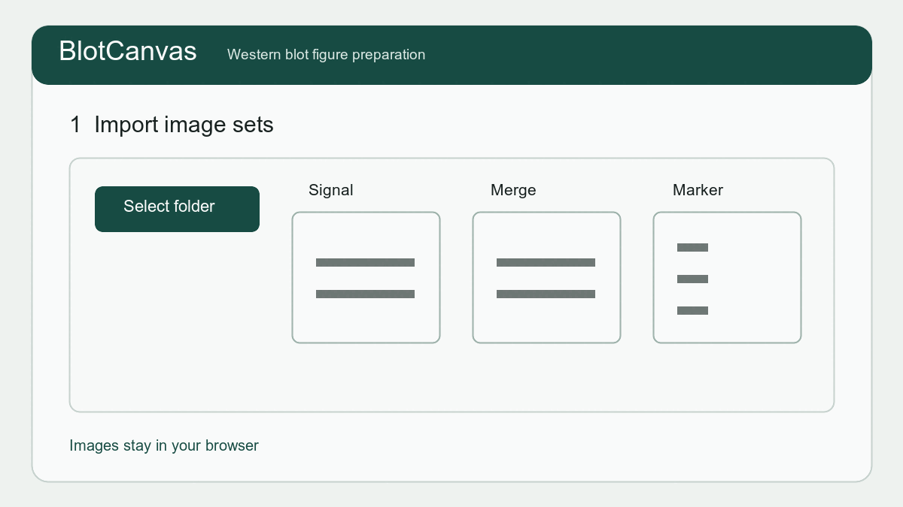

Western blot画像から図と元画像記録を作る
BlotCanvasは、Western blot画像から論文・学会発表用の図、元画像記録、簡易定量を作成する無料のブラウザアプリです。画像はブラウザ内で処理し、アプリケーションサーバーへ送信しません。MIT Licenseで公開しているPublic Betaです。
画像の読み込みから保存まで
- 撮影ファイルを読み込み、Signal・Merge・Markerの役割を確認します。
- ゲルごとに水平補正し、領域を切り出して分子量マーカーとレーン条件ラベルを配置します。
- Figureを確認し、編集可能PDFやPNG／TIFF／JPEG／PDF、元画像と切り出し位置を示すSource record、軽量プロジェクトJSONを保存します。
- 必要な場合だけバンド・背景ROIを置いて簡易定量し、グラフや測定CSVを書き出します。

元画像と表示調整を区別する
元画像は別の場所にも保管してください。同じ抗体を比較する画像には同じ表示調整値を使用し、処理履歴を保管します。Figure用の反転・明るさ・コントラストは表示用であり、定量値は調整前の元画像から計算します。
プロジェクトJSONに画像本体は含まれません。再開時はJSONを開き、元画像フォルダを選択して再リンクします。
Beta版の制限
最新版Chrome／Edgeを推奨します。簡易定量は矩形ROIによるベータ機能です。論文等に使用する前に、同一画像・同一ROIでImageJ等の既存手法と照合してください。統計処理と独立したbiological replicateの集約は現在の対象外です。
所属機関・投稿先学術誌・研究公正の規程に従ってください。不具合報告には、元画像、未公開データ、個人情報、患者情報等の機密情報を送らないでください。